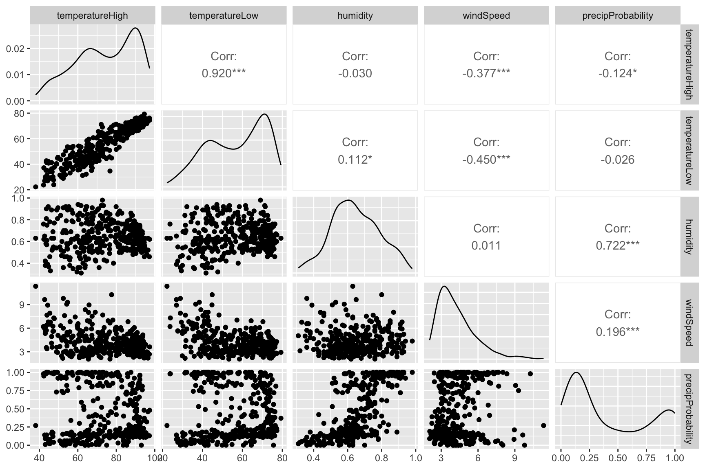
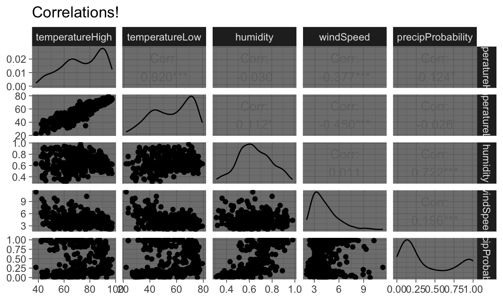
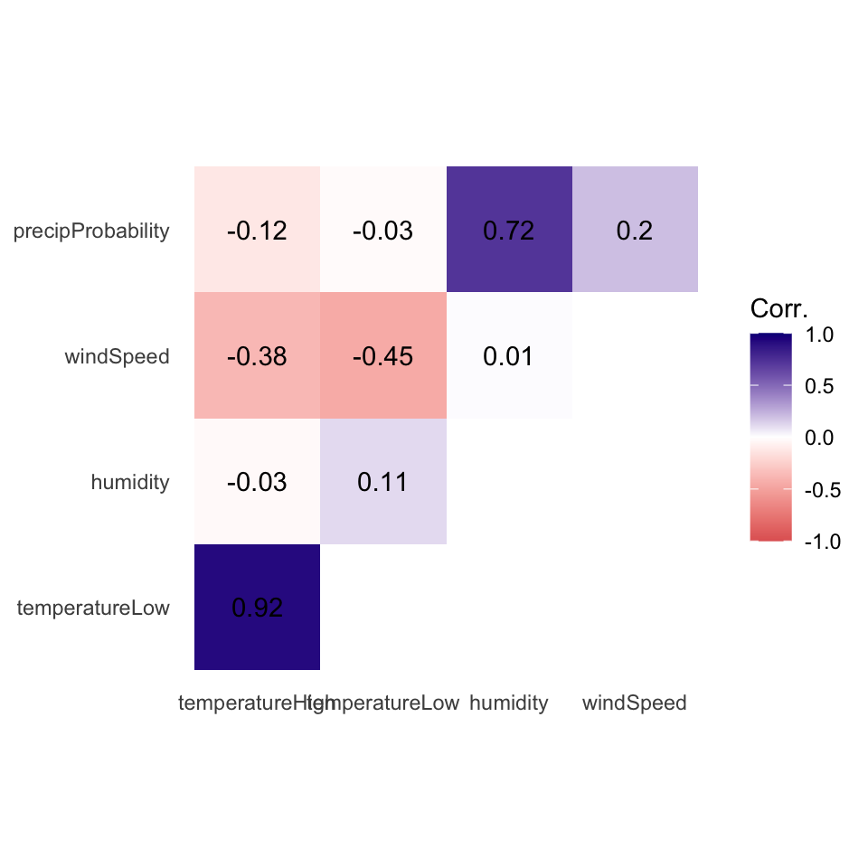
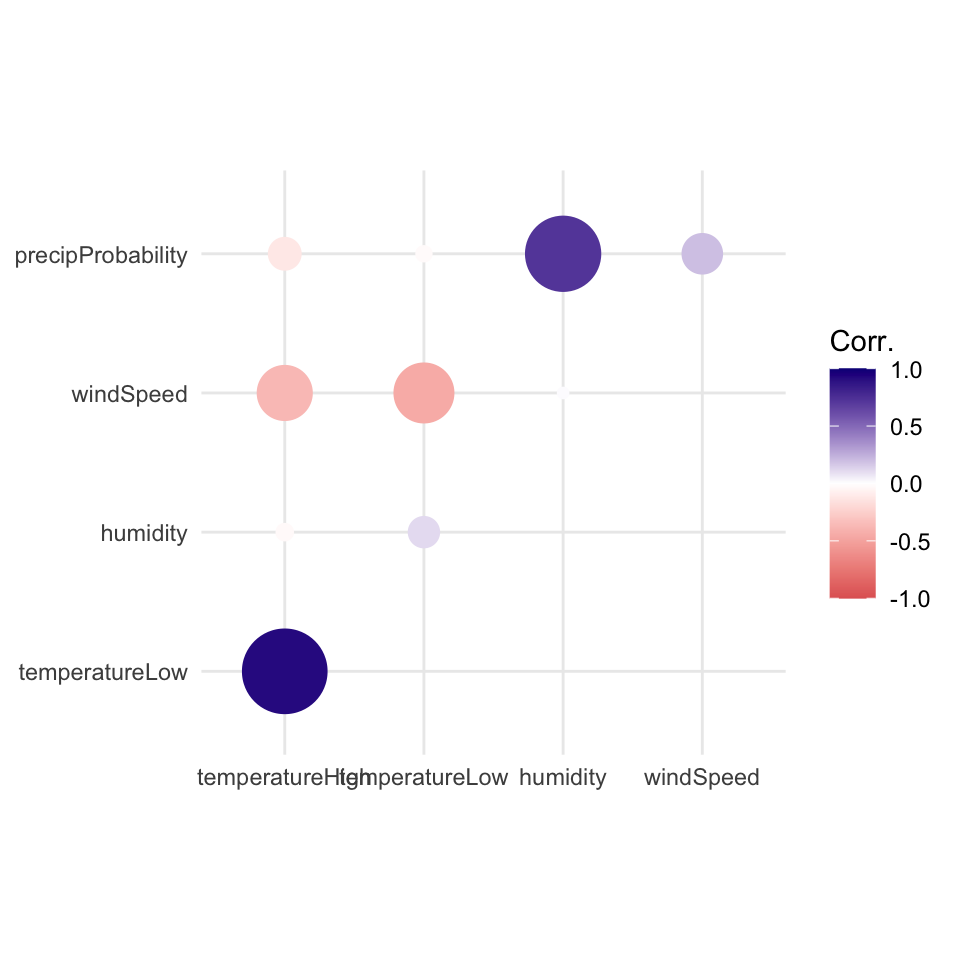
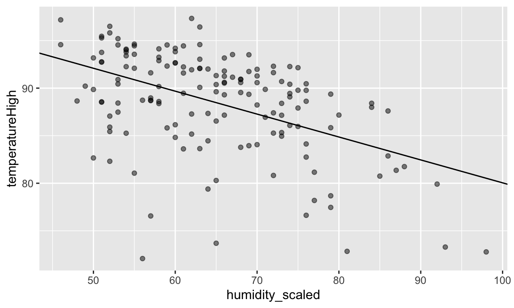
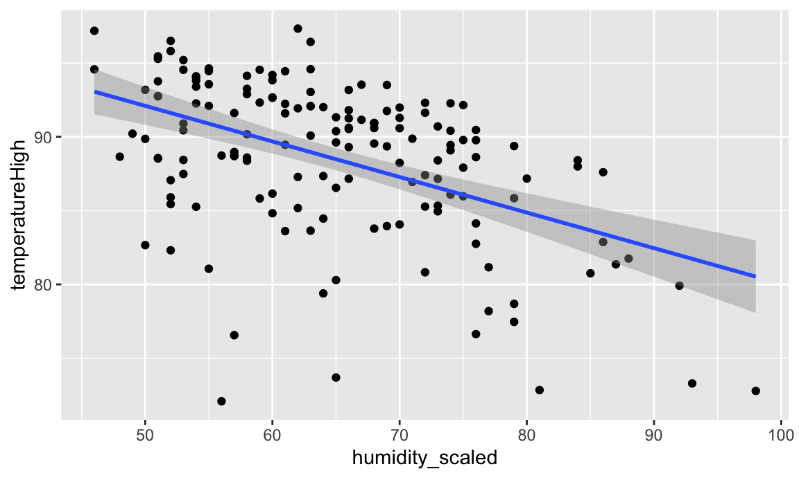

library(tidyverse) # For ggplot, dplyr, and friends
library(patchwork) # For combining ggplot plots
library(GGally) # New one, for scatterplot matrices
library(broom) # For converting model objects to data framesIntroduction to Regression
Preliminaries
For this example, we’re going to use historical weather data from Dark Sky about wind speed and temperature trends for downtown Atlanta (specifically 33.754557, -84.390009) in 2019. We downloaded this data using Dark Sky’s (about-to-be-retired-because-they-were-bought-by-Apple) API using the darksky package.
If you want to follow along with this example, you can download the data below (you’ll likely need to right click and choose “Save Link As…” and place it in a data folder next to your working R script):
Code
Load the data
First, we load the libraries we’ll be using:
Then we load the data with read_csv(). This is tidyverse’s CSV reader (base R is read.csv). Here we assume that the CSV file was downloaded and lives in a subfolder named data:
weather_atl <- read_csv("data/atl-weather-2019.csv")Of course, you can also load it directly with the URL from above (as we showed before).
Scatterplot matrices
The foundation of linear regression is corrleation. We can visualize the correlations between pairs of variables with the ggpairs() function in the GGally package. For instance, how correlated are high and low temperatures, humidity, wind speed, and the chance of precipitation? We first make a smaller dataset with just those columns, and then we feed that dataset into ggpairs() to see all the correlation information:
library(GGally)
weather_correlations <- weather_atl %>%
select(temperatureHigh, temperatureLow, humidity, windSpeed, precipProbability)
ggpairs(weather_correlations)
It looks like high and low temperatures are extremely highly positively correlated (r = 0.92). Wind speed and temperature are moderately negatively correlated, with low temperatures having a stronger negative correlation (r = -0.45). There’s no correlation whatsoever between low temperatures and the precipitation probability (r = -0.03) or humidity and high temperatures (r = -0.03).
Even though ggpairs() doesn’t use the standard ggplot(...) + geom_whatever() syntax we’re familiar with, it does behind the scenes, so you can add regular ggplot layers to it:
ggpairs(weather_correlations) +
labs(title = "Correlations!") +
theme_dark()
TRY IT
Here’s some code to load data from the Residential Energy Consumption Survey (RECS), a once-a-decade survey of household energy consumption done by the Energy Information Administration.. Use the code here to load the data. I’ve selected a few variables and renamed them to something intuitive. Each observation is a household surveyed by the EIA. The variable named EnergyUsed is the total BTU’s of energy consumed by that household.
Most of the variables are self-explanatory except the following:
AgeOfHomeis on a 1-9 scale where 1 is the oldest and 9 is the newest. This is “discretized” age.HeaterAgeis the age of the home’s heater from 1 to 6 where 6 is the oldest and 1 is the newest.TVSizeis on a scale of 1 (smallest) to 4 (largest)TempHometells us the home’s thermostat setting when home (in degrees farenheit)
Your task is to make a ggpairs plot for EnergyUsed and five of the variables in the RECS data. What variables do you think are correlated with total energy use EnergyUsed? And what can we learn about energy consumption from these correlations?
RECS = read.csv('https://www.eia.gov/consumption/residential/data/2009/csv/recs2009_public.csv', stringsAsFactors = F) %>%
as_tibble() %>%
dplyr::select(EnergyUsed = TOTALBTU,
ColdDays = HDD65, HotDayss = CDD65, SquareFeet = TOTHSQFT, CarsGarage = SIZEOFGARAGE,
AgeOfHome = YEARMADERANGE, TreeShade = TREESHAD, TVSize = TVSIZE1, HeaterAge = EQUIPAGE, HasAC = AIRCOND,
TempHome = TEMPHOME) %>%
dplyr::filter(HeaterAge != -2 & TempHome !=-2) # these are NAsCorrelograms
Scatterplot matrices typically include way too much information to be used in actual publications. I use them when doing my own analysis just to see how different variables are related, but I rarely polish them up for public consumption. In some interesting supplemental material located here, Claus Wilke showed a type of plot called a correlogram which is more appropriate for publication.
These are essentially heatmaps of the different correlation coefficients. To make these with ggplot, we need to do a little bit of extra data processing, mostly to reshape data into a long, tidy format that we can plot. Here’s how.
First we need to build a correlation matrix of the main variables we care about. Ordinarily the cor() function in R takes two arguments—x and y—and it will return a single correlation value. If you feed a data frame into cor() though, it’ll calculate the correlation between each pair of columns. But be careful - don’t feed in hundreds of variables by accident!
# Create a correlation matrix
things_to_correlate <- weather_atl %>%
select(temperatureHigh, temperatureLow, humidity, windSpeed, precipProbability) %>%
cor()
things_to_correlate temperatureHigh temperatureLow humidity windSpeed precipProbability
temperatureHigh 1.00 0.920 -0.030 -0.377 -0.124
temperatureLow 0.92 1.000 0.112 -0.450 -0.026
humidity -0.03 0.112 1.000 0.011 0.722
windSpeed -0.38 -0.450 0.011 1.000 0.196
precipProbability -0.12 -0.026 0.722 0.196 1.000The two halves of this matrix (split along the diagonal line) are identical, so we can remove the lower triangle with this code (which will set all the cells in the lower triangle to NA):
# Get rid of the lower triangle
things_to_correlate[lower.tri(things_to_correlate)] <- NA
things_to_correlate temperatureHigh temperatureLow humidity windSpeed precipProbability
temperatureHigh 1 0.92 -0.03 -0.377 -0.124
temperatureLow NA 1.00 0.11 -0.450 -0.026
humidity NA NA 1.00 0.011 0.722
windSpeed NA NA NA 1.000 0.196
precipProbability NA NA NA NA 1.000Finally, in order to plot this, the data needs to be in tidy (or long) format. Here we convert the things_to_correlate matrix into a data frame, add a column for the row names, take all the columns and put them into a single column named measure1, and take all the correlation numbers and put them in a column named cor In the end, we make sure the measure variables are ordered by their order of appearance (otherwise they plot alphabetically and don’t make a triangle)
things_to_correlate_long <- things_to_correlate %>%
# Convert from a matrix to a data frame
as.data.frame() %>%
# Matrixes have column names that don't get converted to columns when using
# as.data.frame(), so this adds those names as a column
rownames_to_column("measure2") %>%
# Make this long. Take all the columns except measure2 and put their names in
# a column named measure1 and their values in a column named cor
pivot_longer(cols = -measure2,
names_to = "measure1",
values_to = "cor") %>%
# Make a new column with the rounded version of the correlation value
mutate(nice_cor = round(cor, 2)) %>%
# Remove rows where the two measures are the same (like the correlation
# between humidity and humidity)
filter(measure2 != measure1) %>%
# Get rid of the empty triangle
filter(!is.na(cor)) %>%
# Put these categories in order
mutate(measure1 = fct_inorder(measure1),
measure2 = fct_inorder(measure2))
things_to_correlate_long# A tibble: 10 × 4
measure2 measure1 cor nice_cor
<fct> <fct> <dbl> <dbl>
1 temperatureHigh temperatureLow 0.920 0.92
2 temperatureHigh humidity -0.0301 -0.03
3 temperatureHigh windSpeed -0.377 -0.38
4 temperatureHigh precipProbability -0.124 -0.12
5 temperatureLow humidity 0.112 0.11
6 temperatureLow windSpeed -0.450 -0.45
7 temperatureLow precipProbability -0.0255 -0.03
8 humidity windSpeed 0.0108 0.01
9 humidity precipProbability 0.722 0.72
10 windSpeed precipProbability 0.196 0.2 Phew. With the data all tidied like that, we can make a correlogram with a heatmap. We have manipulated the fill scale a little so that it’s diverging with three colors: a high value, a midpoint value, and a low value.
ggplot(things_to_correlate_long,
aes(x = measure2, y = measure1, fill = cor)) +
geom_tile() +
geom_text(aes(label = nice_cor)) +
scale_fill_gradient2(low = "#E16462", mid = "white", high = "#0D0887",
limits = c(-1, 1)) +
labs(x = NULL, y = NULL, fill = 'Corr.') +
coord_equal() +
theme_minimal() +
theme(panel.grid = element_blank())
Instead of using a heatmap, we can also use points, which encode the correlation information both as color and as size. To do that, we just need to switch geom_tile() to geom_point() and set the size = cor mapping (note the use of the absolute value function):
ggplot(things_to_correlate_long,
aes(x = measure2, y = measure1, color = cor)) +
# Size by the absolute value so that -0.7 and 0.7 are the same size
geom_point(aes(size = abs(cor))) +
scale_color_gradient2(low = "#E16462", mid = "white", high = "#0D0887",
limits = c(-1, 1)) +
scale_size_area(max_size = 15, limits = c(-1, 1), guide = 'none') +
labs(x = NULL, y = NULL, color = 'Corr.') +
coord_equal() +
theme_minimal() +
theme(panel.grid.minor = element_blank())
Simple regression
We finally get to this week’s material. Although correlation is nice, we eventually may want to visualize regression. The lecture has shown us some very intuitive, straightforward ways to think about regression (aka, a line). Simple regression is easy to visualize, since you’re only working with an \(X\) and a \(Y\). For instance, what’s the relationship between humidity and high temperatures during the summer?
First, let’s filter the Atlanta weather data to only look at the summer. We also add a column to scale up the humidity value—right now it’s on a scale of 0-1 (for percentages), but when interpreting regression we talk about increases in whole units, so we’d talk about moving from 0% humidity to 100% humidity, which isn’t helpful, so instead we multiply everything by 100 so we can talk about moving from 50% humidity to 51% humidity. We also scale up a couple other variables that we’ll use in the larger model later.
weather_atl_summer <- weather_atl %>%
filter(time >= "2019-05-01", time <= "2019-09-30") %>%
mutate(humidity_scaled = humidity * 100,
moonPhase_scaled = moonPhase * 100,
precipProbability_scaled = precipProbability * 100,
cloudCover_scaled = cloudCover * 100)Then we can build a simple, single-variable regression model for the high temperature “regressed on” humidity. We would write this regression as:
\[HighTempScaled_i = \beta_0 + \beta_1 HumidityScaled_i + \varepsilon_i\]
Each of our 153 observations is indexed by \(i\). Since it will almost never be the case that \(\beta_0 + \beta_1 HumidityScaled_i = HighTempScaled\), we include the error term \(\varepsilon_i\) to account for things that aren’t in our regression.
Our estimated parameters \(\beta_0, \beta_1\) define the line of best fit, or the “regression line”. That regression line is our conditional expectation function:
\[E[HighTempScaled|HumidityScaled] = \beta_0 + \beta_1 HumidityScaled\]
Note that we do not have an error term here – the \(E[]\) doesn’t have an error term in it, only the regression function does.
To do this in R, we’ll first use the formula from Principles 06:
weather_atl_results = weather_atl_summer %>%
dplyr::summarize(mu_x = mean(humidity_scaled),
mu_y = mean(temperatureHigh),
sd_x = sd(humidity_scaled),
sd_y = sd(temperatureHigh),
rho = sum(((temperatureHigh-mu_y)/sd_y)*((humidity_scaled-mu_x)/sd_x))/(n()-1) ) %>%
# Note in rho we had to use that same "N-1" correction. cor() does this for us automatically
dplyr::mutate(beta_1 = rho*(sd_y/sd_x),
beta_0 = mu_y - beta_1*mu_x)
print(weather_atl_results)# A tibble: 1 × 7
mu_x mu_y sd_x sd_y rho beta_1 beta_0
<dbl> <dbl> <dbl> <dbl> <dbl> <dbl> <dbl>
1 64.8 88.5 10.6 5.33 -0.481 -0.241 104.Note that the formulas from Principles 06 have a direct translation into the code. Also note that we used summarize on the data so that we get only one row of data (no more 1,000+ rows, we’ve summarized them using mean and sd).
Interpretation of coefficients
Our estimates of the \(\beta_0, \beta_1\) are our “coefficients”. It’s important we interpret them correctly. We can interpret these coefficients like so:
beta_0(or \(\beta_0\)) is the intercept. By definition of an intercept, it shows that the average temperature when there’s 0% humidity is 104°. There are no days with 0% humidity though, so we can ignore the intercept—it’s really just here so that we can draw the line.beta_1(or \(\beta_1\)) is the coefficient forHumidityScaled. It is the slope of the regression line, and thus the change in E[HighTempScaled] per 1-unit increase in \(HumidityScaled\). It shows that a one percent increase in humidity is associated with a 0.241° decrease in temperature, on average.- This (and \(\beta_0\)) are random variables – if we re-draw the sample, we’ll see a slightly different relationship. We’ll talk about the standard error of this (and how to see it) in a little bit.
Visualizing this model is simple, since there are only two variables. We visualized the regression line in the Galton Heights data during Content 05, so let’s just use that code.
ggplot(weather_atl_summer, aes(x = humidity_scaled, y = temperatureHigh)) +
geom_point(alpha = 0.5) +
geom_abline(intercept = weather_atl_results$beta_0, slope = weather_atl_results$beta_1)
Every point along the regression line is the \(E[HighTempScaled|HumidityScaled]\). Put in whatever value of humidity you want, and the line tells you what the expectation of the high temperature will be.
Another way we can add a regression line in a 2-D plot is using geom_smooth. geom_smooth is a ggplot geometry that adds a line of best fit. This can be flexible, or this can be based on a linear relationship – the regression line. We’ll see how to use built-in functions in R to do regression later, but for now, we’ll just ask ggplot to make a linear model (“lm”) for a line of best fit. The slope of that line is going to be exactly our estimate of \(\beta_1\).
ggplot(weather_atl_summer,
aes(x = humidity_scaled, y = temperatureHigh)) +
geom_point() +
geom_smooth(method = "lm")
And indeed, we see the same line as we made “manually” before.
TRY IT
Let’s use that RECS data to regress EnergyUsed on one of the variables from your scatterplot matrix. Note that we say the left-hand-side variable (the “Y”) is regressed on the right-hand-side (the “X”) variable.
Using the formulas and codes for regression, choose the variable you want to use in the regression, run it, and visualize the result.
We’ll have you share your work and interpret the results when done. https://bit.ly/EC242